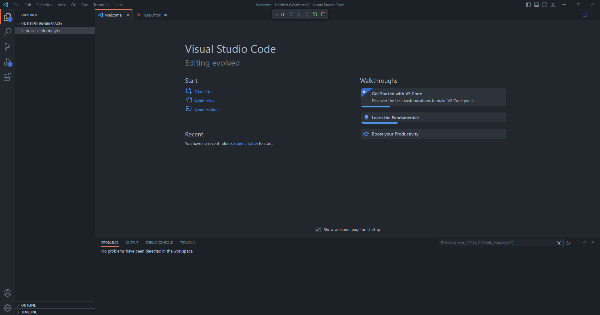

Poradnik jak zainstalować visual studio code.
- Wpisujesz w dowolną wyszukiwarkę ten oto link ,,https://code.visualstudio.com/docs/?dv=win’’, lub klikasz w obrazek poniżej by cię przeniósł automatycznie na ten link.
- W otwartej stronie szukasz napisu ,,download'' który powinien znajdować się na panelu u góry,na takim jak na obrazku poniżej.
- Teraz wybierasz system jaki masz zainstalowany na komputerze i klikasz ikonkę z nim. To spowoduje zainstalowanie instalatora,, visual studio code’’.
- W momencie gdy został on zainstalowany klikasz strzałkę skierowaną do góry tak aby była skierowana w dół i klikasz ,,pokaż w folderze’’.
- Jeśli uruchomił ci się folder gdzie jest pokazany dany instalator ,klikasz na niego dwukrotnie i wybierasz język ci odpowiedni spośród możliwych do wybrania.
- Po zapoznaniu się z regulaminem ,klikasz taką samą opcję jak na obrazku niżej.
- Jednym z ostatnich kroków w instalatorze będzie wybranie odpowiadających ci opcji i kliknięcie środkowego przycisku na dole.
- przedostatnim krokiem w instalatorze będzie kliknięcie przycisku który spowoduje zainstalowanie programu.
- Po zainstalowaniu klikasz w kwadracik ,który gdy jest zamalowany na niebiesko uruchomi program a jeśli nie jest zamalowany to program nie zostanie uruchomiony, który powinien wyglądać mniej więcej jak na obrazku poniżej
- Program powinien wygrlądać jak na zamieszczonej graficce poniżej 